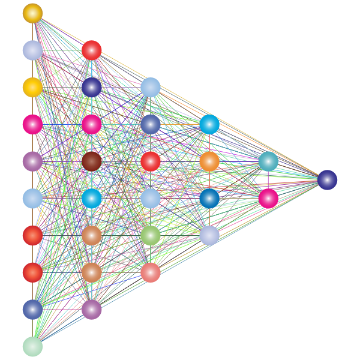
Na aula passada aprendemos o básico das redes neurais. Vamos relembrar como o neurônio funciona antes de estudar as diferentes arquiteturas.
Uma rede neural é formada por dois elementos principais:
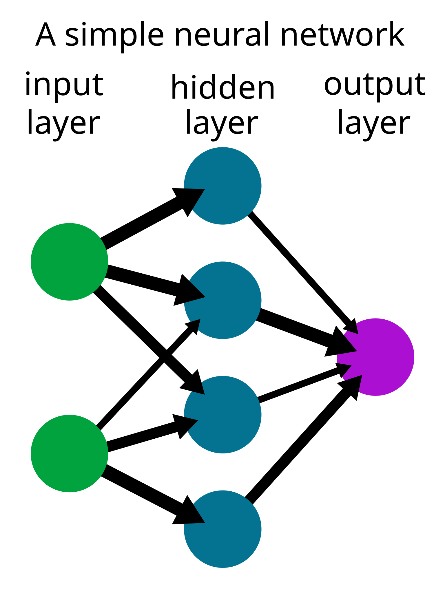
Cada neurônio combina as entradas \(x_i\) com seus pesos \(w_i\), soma um viés e aplica uma função de ativação:
O valor \(z\) passa por uma função de ativação. A sigmóide "achata" o resultado entre 0 e 1:
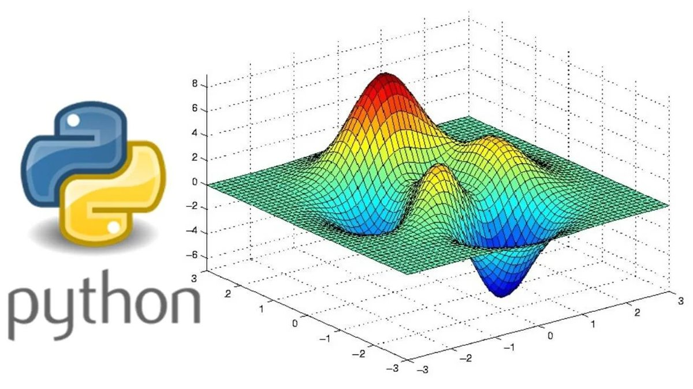
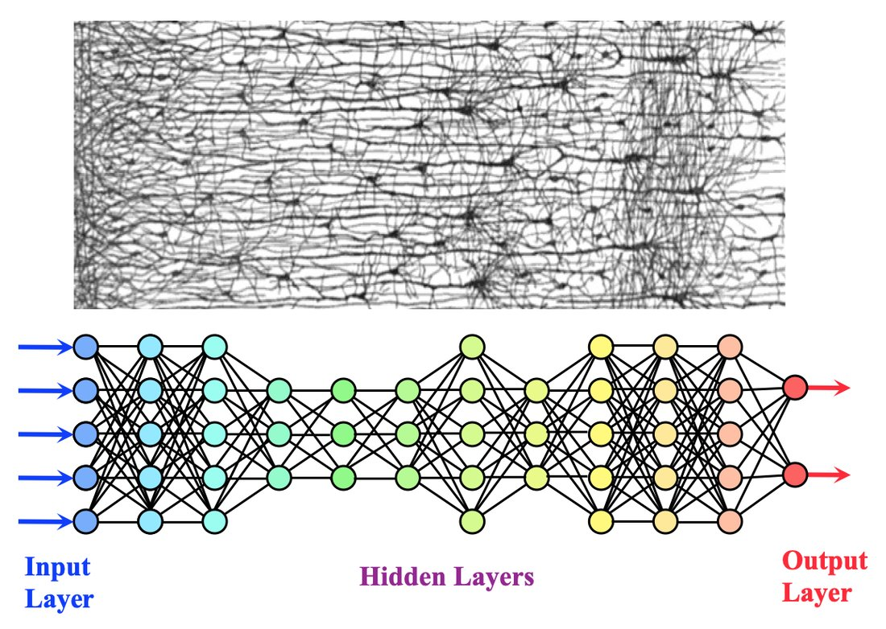
Diferentes arquiteturas mudam camadas, saídas, ativações e conectividade.
A camada de saída pode ter vários neurônios — um por classe. A ativação softmax transforma as saídas em probabilidades que somam 1:
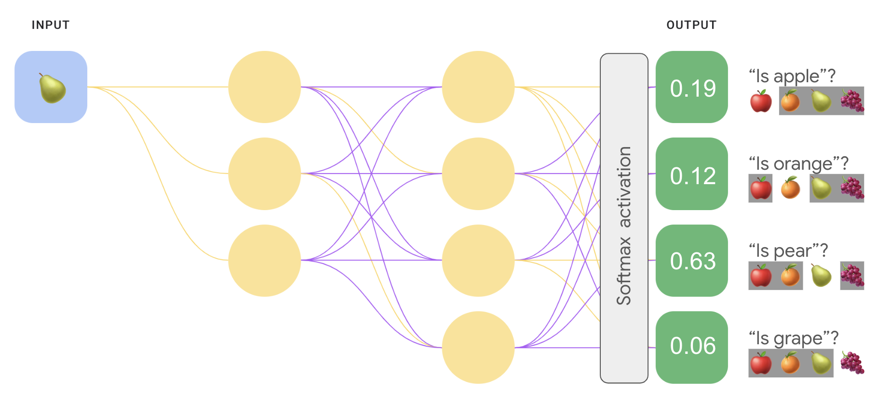
A função de ativação define como o neurônio responde ao valor \(z\):
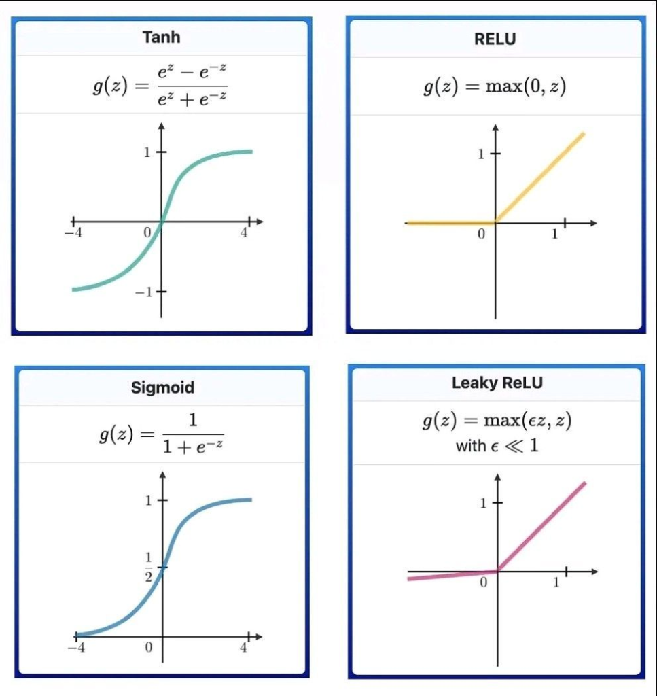
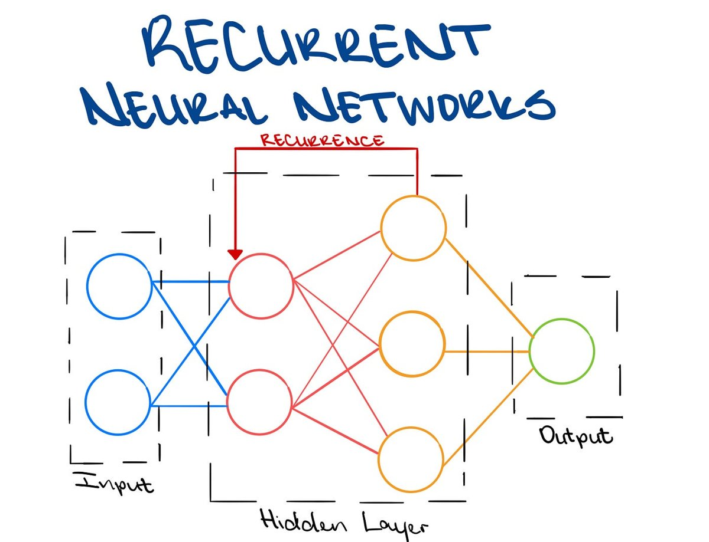
O tipo de problema muda a camada de saída e a função de perda da rede.
Na regressão, a saída é um número contínuo (sem softmax) — ex.: prever um preço ou uma temperatura.
As CNN têm um padrão de conectividade especial, ideal para imagens: cada neurônio olha apenas uma região local da entrada.
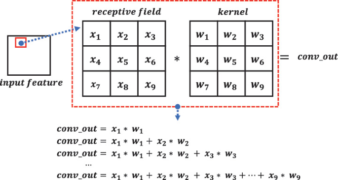
Toda imagem é, para o computador, uma matriz de números — cada pixel é um valor de intensidade.
Ampliando bem, vemos os pixels individuais que formam o texto e as formas:
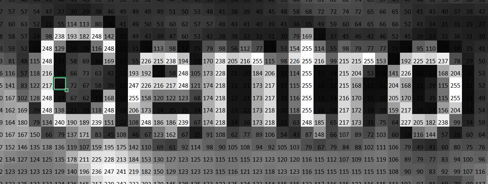
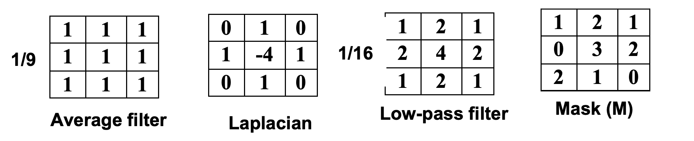
Original
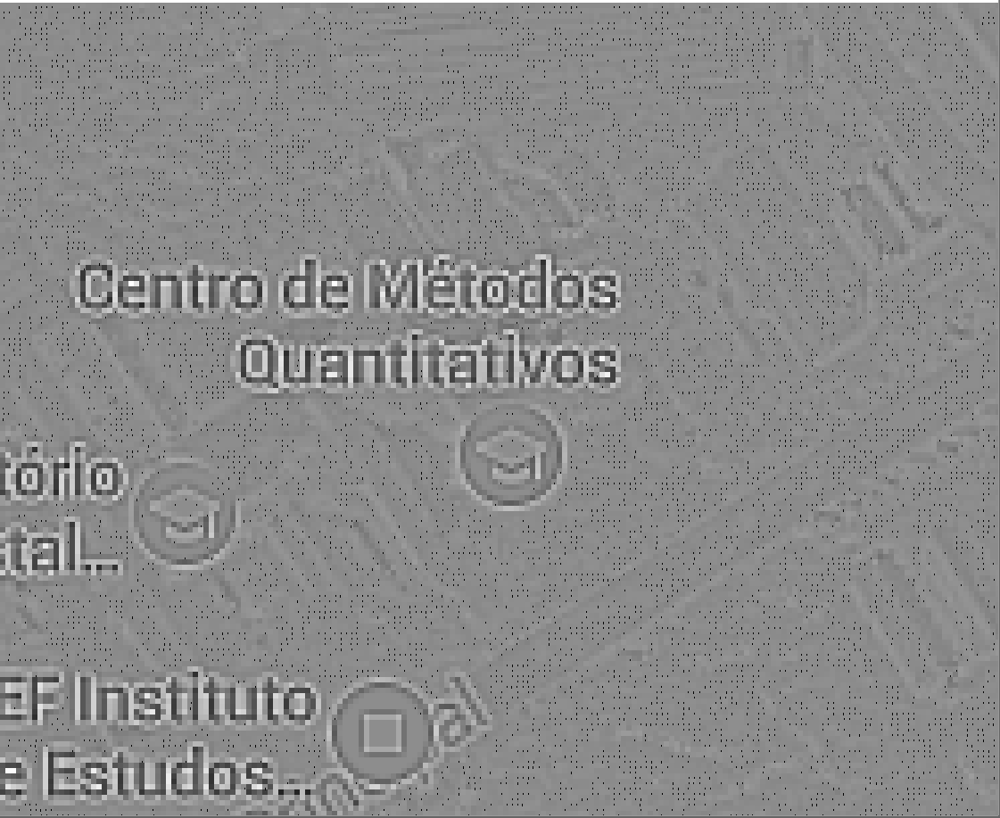
Passa-alta (bordas)
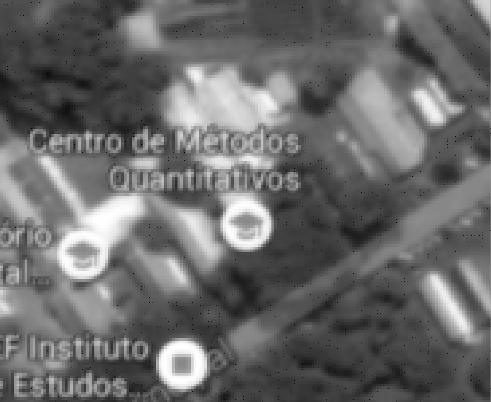
Passa-baixa (suaviza)
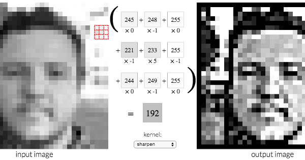
Em vez de escolhermos os filtros à mão, deixamos a rede neural aprender os pesos do kernel durante o treinamento.
Esses filtros aprendidos são as CONVOLUÇÕES! 🔍
Esta rede foi treinada para identificar a espécie de macaco na imagem.
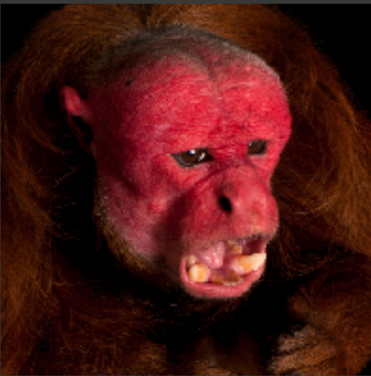
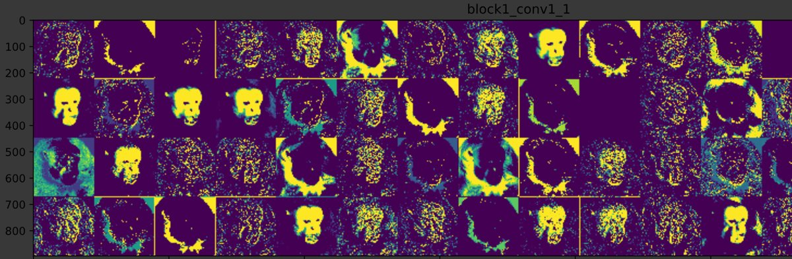
Podemos analisar quais partes da imagem mais ativam a rede (mais contribuem para a classificação final).
Vemos que a região mais utilizada é o rosto do macaco.
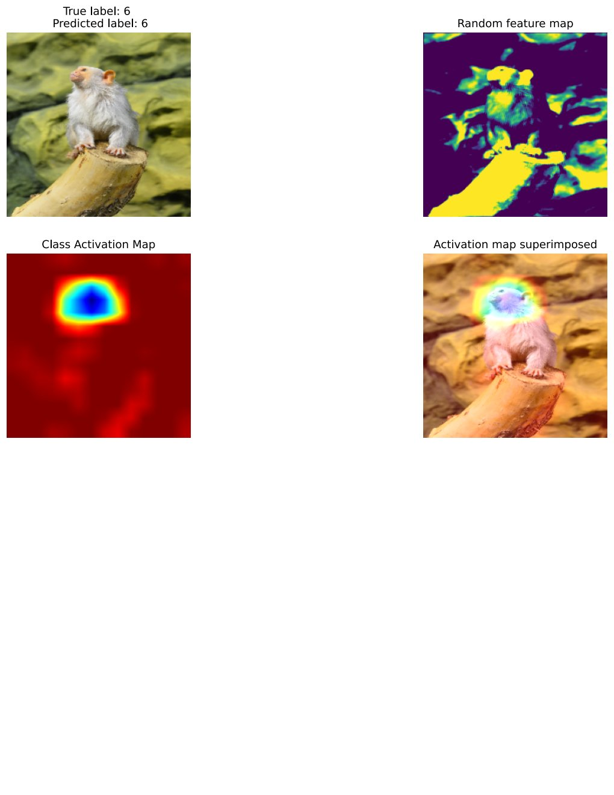
Ao longo dos anos surgiram arquiteturas de CNN cada vez mais profundas e eficientes.
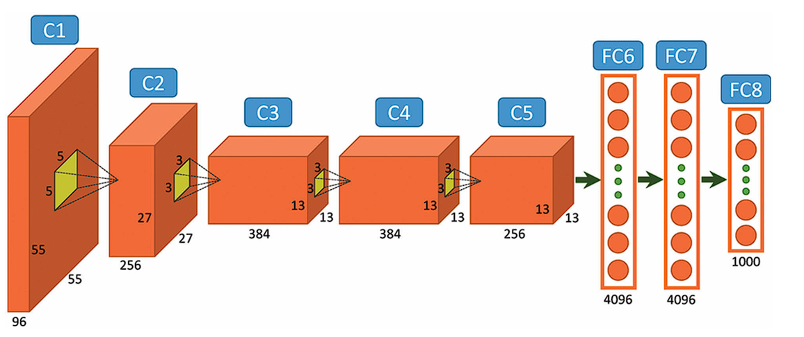
Marco de 2012 na visão computacional, com camadas convolucionais seguidas de camadas densas.
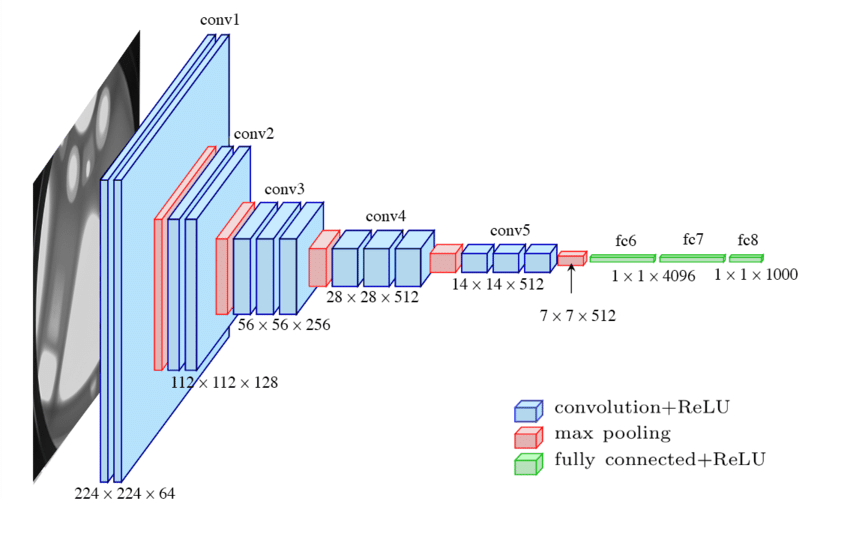
Arquitetura profunda e regular: blocos de convolução 3×3 + max pooling.
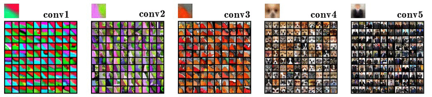
As primeiras camadas detectam bordas e cores; as profundas capturam padrões complexos.
Próxima aula: Conceitos CNN